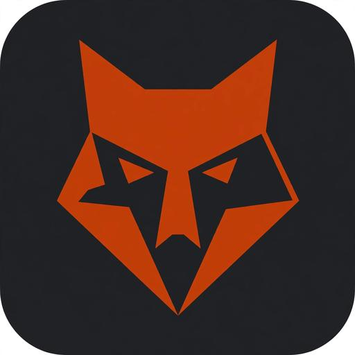
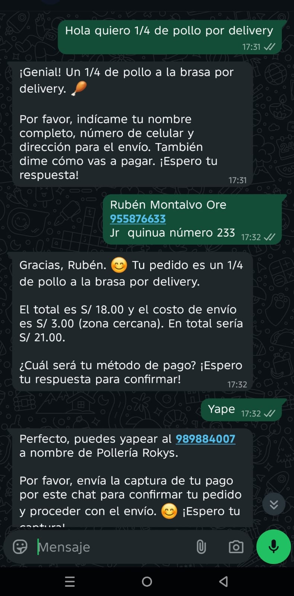
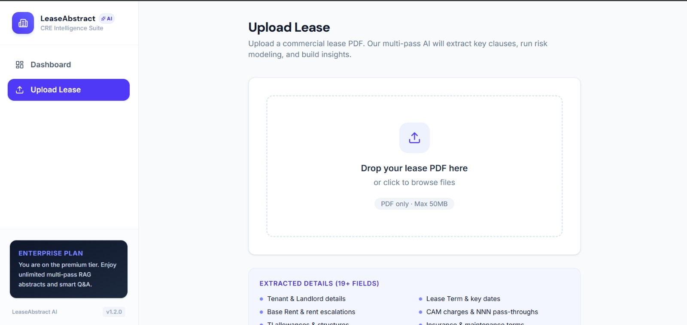

VULPIS
IA para emprender
desde Ayacucho
Kenedy Javier Garamendi Lapa
Fundador y Product Lead en Vulpis

¿Quién usó IA esta semana?
¿Y quién la usó para emprender?
La IA adivina la siguiente palabra.
Ayacucho, ciudad de las 33
Tú también adivinaste.
La IA hace lo mismo, pero leyó millones de textos.
¿Nos espía? ¿Nos controla?
La IA no tiene intenciones.
El riesgo real: tus datos y el mal uso.
No compartas datos sensibles
Sin DNI, cuentas ni claves
Verifica lo que responde
Se equivoca y suena segura
Usa apps y cuentas oficiales
Nada de copias ni enlaces raros
No soy ingeniero.
Me atreví a construir.
01
Estudiante de Enfermería en Ayacucho
02
Hackatones y mucho aprendizaje
03
Conexiones con personas de otros países
Para crear solo necesitas 3 cosas
Y una regla: construye, prueba con gente real, pivota.
¿Cuánto vale una hora de trabajo manual?
Contabilidad
ANTES
Digitar registros uno por uno
CON IA
Registros ordenados, tú revisas
Asistencia Administrativa
ANTES
Redactar el mismo oficio de cero
CON IA
Borrador listo para ajustar
Marketing
ANTES
Quedarte sin ideas de contenido
CON IA
Varias ideas para elegir
Y lo mismo en todas las carreras.
Ayacucho tiene cultura, tierra y talento.
Nos falta digitalizar.
Cooperativas agrarias
Catálogo en línea
Pedidos por WhatsApp
Inventario al día
Artesanía y turismo
Venta en línea
Atención 24/7
No hay que irse para construir. Se puede desde aquí.
Un proceso manual, convertido en sistema.
DEMO

Bot de atención
Atención y ventas por WhatsApp
EN VIVO

Lease Abstractor
Resume contratos de arriendo
PROTOTIPO
Protokol
Convierte procesos en documentos
Tres problemas distintos, la misma idea.
Elige UNA tarea
y pruébala con IA.
¿Tienes un negocio o un proceso que te quita horas?
Construyámoslo.
Escanea con tu celular
Conoce Vulpis
Escríbeme